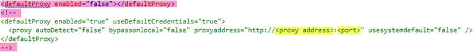

Open topic with navigation
Advanced Fusion configuration
Configuring fusion with a proxy server
If your network configuration requires a proxy server to access the internet, you can configure the Infogix Data3Sixty Fusion agent to go through a proxy server as follows:
- Navigate to the app folder in the Fusion agent installation directory.
- Open the
Proxy.config file in a text editor.
- If this is the first time you are editing this file, remove the text highlighted in red below:

- Replace the proxy address and port values, highlighted in yellow above, with the actual address and port of the proxy server.
Changing the Fusion agent log level
By default, all events are logged. To save server disk space, you can change the log level as follows:
- Navigate to the "app" folder in your Fusion agent installation directory.
- Open the
Logging.config file.
- Locate the level value line:
<level value="ALL" />
- Edit the level value as required, choosing from the following options:
For example, change the line to <level value="WARN" /> to set the log level to WARN.